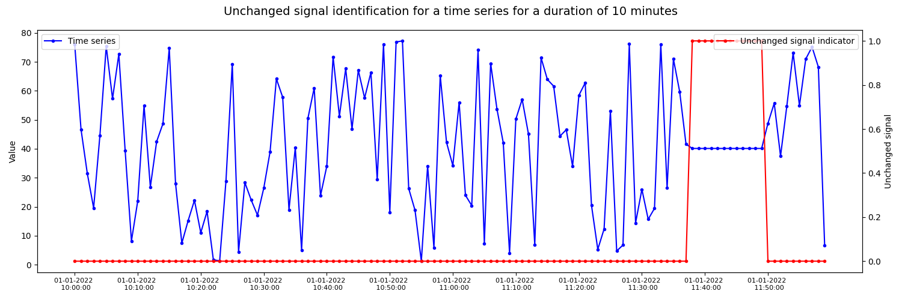

Note
Click here to download the full example code
Unchanged signal identification of time series data
Example of visualizing unchanged signal during a certain time period in a given time series.
import random
from datetime import datetime, timedelta
import matplotlib.pyplot as plt
import numpy as np
import pandas as pd
from indsl.detect import unchanged_signal_detector
# Generate time series
start_date = pd.Timestamp("2022/01/01 10:00:00")
end_date = pd.Timestamp("2022/01/01 11:59:00")
ts_values = np.random.uniform(1, 80, size=120)
data = pd.Series(ts_values, index=pd.date_range(start_date, end_date, periods=120), name="value")
data = data.sort_index()
duration = pd.Timedelta(minutes=10)
# Assign a random value to a set of consecutive time series indices
random_signal_value = np.random.uniform(1, 80)
nr_consecutive_data_points = 12
start_position = random.randint(0, int(len(data) - nr_consecutive_data_points))
data.values[start_position : start_position + nr_consecutive_data_points] = random_signal_value
unchanged_signal_step_series = unchanged_signal_detector(data, duration=duration, min_nr_data_points=3)
# Resample and forward fill generated step series
resampled_step_series = unchanged_signal_step_series.resample("1min")
unchanged_signal_forward_filled = resampled_step_series.ffill()
# Plot unchanged signal identification series against actual data
fig, ax1 = plt.subplots(figsize=(15, 5))
ax1.plot(data.index, data, label="Time series", marker=".", color="blue")
values = np.arange(data.index[0], data.index[-1], timedelta(minutes=10)).astype(datetime)
ax1.set_xticks(values)
ax1.set_xticklabels([ts.strftime("%d-%m-%Y \n %H:%M:%S") for ts in values], fontsize=8)
ax2 = ax1.twinx()
ax2.plot(data.index, unchanged_signal_forward_filled, label="Unchanged signal indicator", marker=".", color="red")
ax1.legend(loc="upper left")
ax2.legend(loc="upper right")
plt.xlabel("Timestamp")
ax1.set_ylabel("Value")
ax2.set_ylabel("Unchanged signal")
fig.suptitle("Unchanged signal identification for a time series for a duration of 10 minutes", fontsize=14)
fig.tight_layout()
plt.show()
Total running time of the script: ( 0 minutes 1.640 seconds)